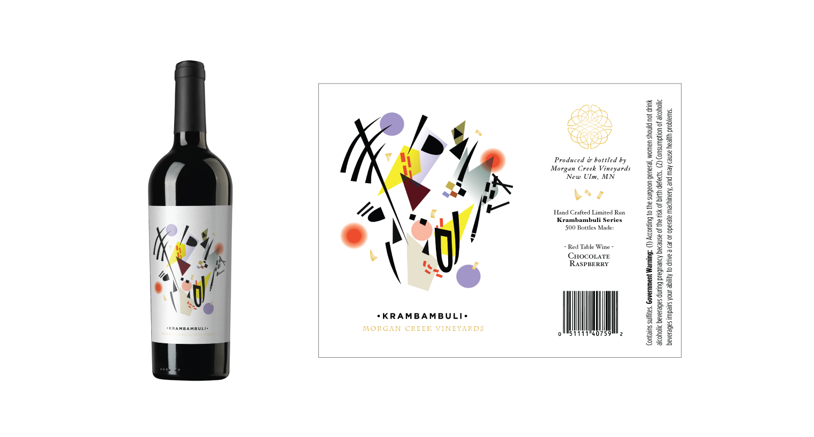

Morgan Creek Vineyard is an aspiring biodynamic vineyard. With this project I want to merge the concept of biodynamics with the imagery used at the winery. This will be a branding expansion project where I will be using their existing brand and freshening up the look with an icons series, label series, and informational signage. The goal is to express & promote biodynamics through the branding.
You might be wondering, what is biodynamics? It is a ecological, holistic, & earth conscious form of farming that was founded by the philosopher & scientist Rudolf Steiner. Many of the methods used in biodynamics are created in consideration of how all elements work together. For example there are animals such as sheep on the farm to prune the weeds, fermented manure that enhances the root systems, and a lunar calender that determines the different treatments for a variety of plants. There are absolutely no chemicals such herbicides and pesticides used.
Biodynamics is an important concept to explore because it is a great holistic tool to combat climate change and promotes healthier soil and habitats. The challenge here is how to promote biodynamics with visuals throughout the winery with a preexisting brand.
The biggest question here is what kind of visual style should I go with? The client already had an answer to that. She said that Wassily Kandinsky that abstract artist had an association to biodynamics. He explored concepts such as anthroposophy (an aspect of biodynamics that expresses movement through art) through his art making. So the images throughout the branding expansion either has Kandinsky accents or is directly inspired by compositions.
Here is a wine label that I designed few months prior to starting this project. This is a limited series where the client gets to play with different wine flavors only makes 500 bottles of each flavor. The name of the series is called Krambambuli which is a named used for a specialty drink that is made during the winter europe. As you can see with the label that the image is inspired by Kandinsky’s art. There is similar variations of these gestures throughout the branding.

I went through many sketching phases. I can up with several icons but was satisfied with the look. As I was doing my research I came across Pentagram Studios Garden Museum graphics. They created these abstract Henry Matisse like botanical icons that could be used in a modular fashion. There seemed to be more flexibility with applying the graphics especially when the images can mostly be contained in a circle or a square. Hence why the graphics are modular. So I redirect my drawings to be confined to rectangular compositions. Then after that the designing process snowballed into what you see here.


Biodynamics is an important concept to learn in the face of global warming. Incorporating concepts of biodynamics into the winery branding will help promote the concept and the practice that is being practice at Morgan Creek Vineyards. With the inspiration of Kandinsky’s expressive style I was able to develop a branding concept that reflected aspects of the farming philosophy. I ended up designing a icon series and label series.